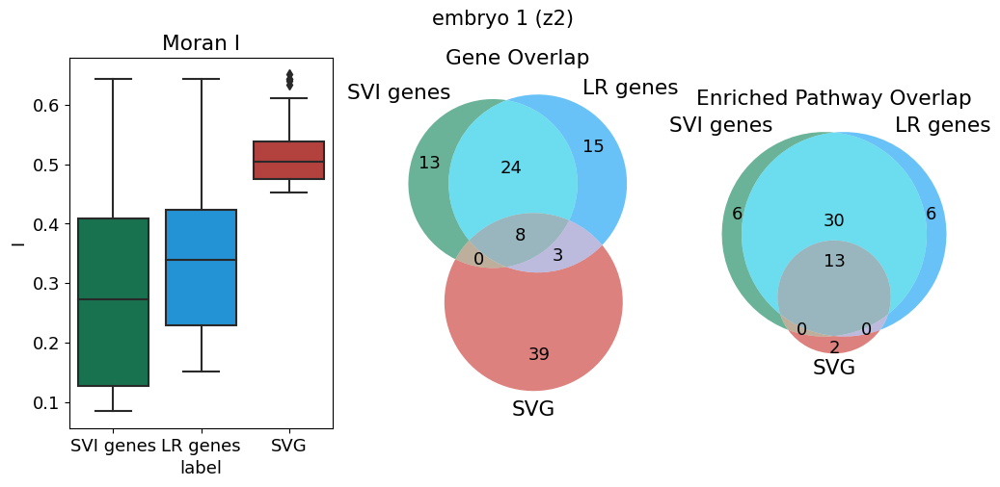
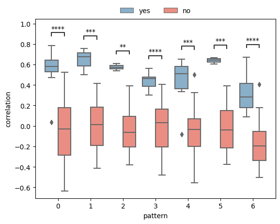
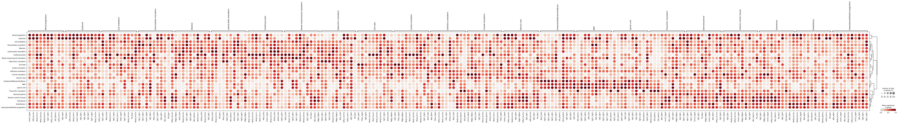
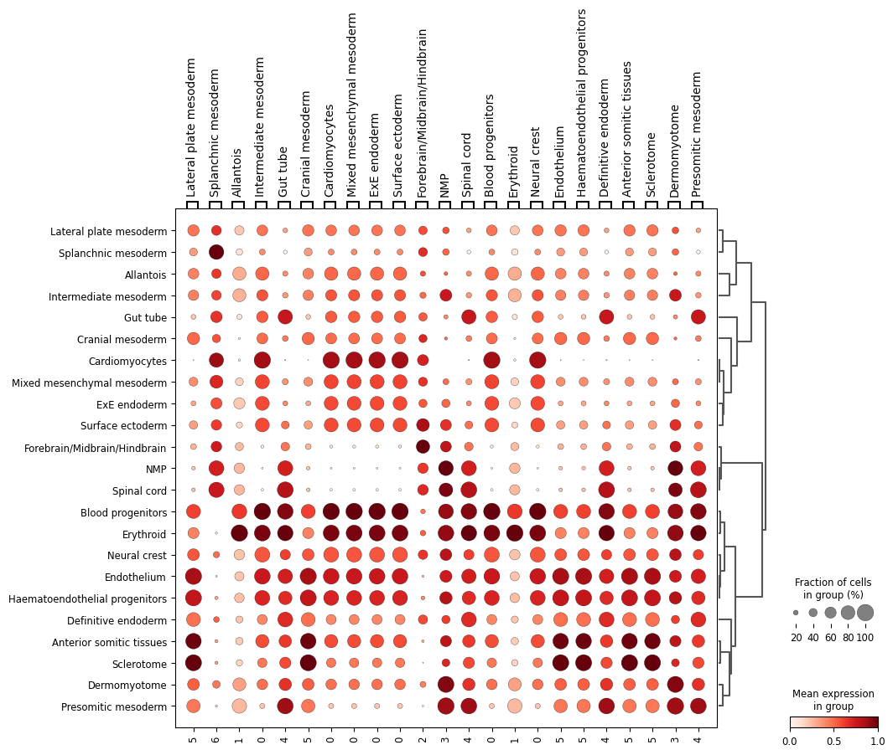
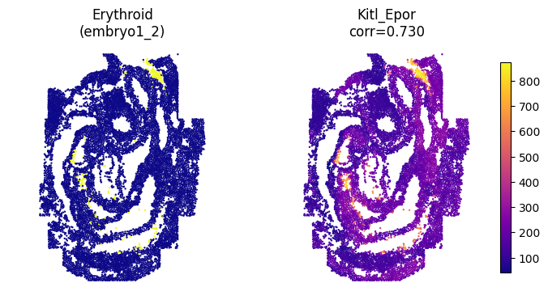
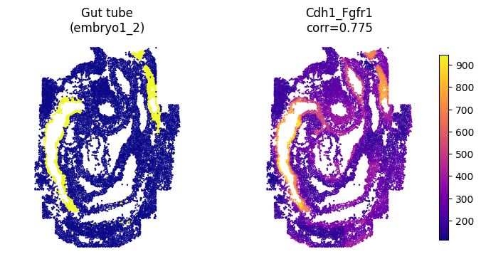
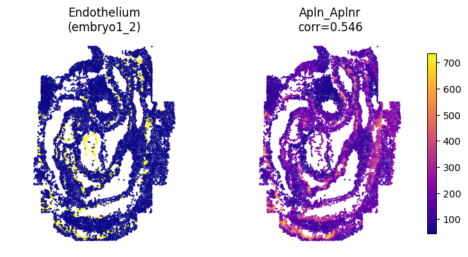
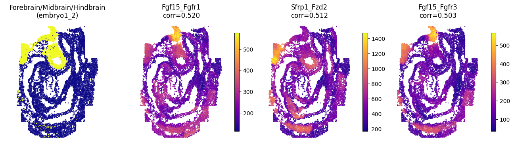
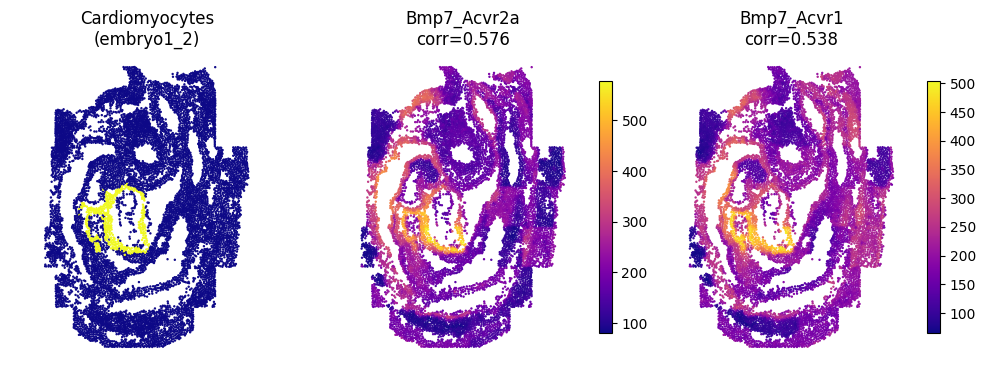

mouse embryo
[35]:
import matplotlib.pyplot as plt
from spider import SPIDER
op = SPIDER()
import anndata
import scanpy as sc
import squidpy as sq
import pandas as pd
import numpy as np
# use cpus only
import os
os.environ['CUDA_VISIBLE_DEVICES'] = '-1'
TF_ENABLE_ONEDNN_OPTS = 0
[40]:
ds = 'mouse_embryo'
sample_name = 'embryo1_2'
out_f = f'../example_datasets/{ds}/{sample_name}/'
adata = anndata.read_h5ad(f'{out_f}/adata.h5ad')
[ ]:
R_path = 'your R path'
[ ]:
no_spatalk = False
if len(adata) > 10000:
no_spatalk=True
idata = op.prep(adata, out_f, R_path, cluster_key=adata.uns['cluster_key'], is_human=adata.uns['is_human'], coord_type=adata.uns['coord_type'], no_spatalk=no_spatalk)
idata, meta_idata = op.find_svi(idata, out_f, R_path, alpha=0.3)
idata.write_h5ad(f'{out_f}/idata.h5ad')
[41]:
idata = anndata.read_h5ad(f'{out_f}/idata.h5ad')
metrics
[24]:
svi_df, svi_df_strict = op.svi.combine_SVI(idata,threshold=0.01)
op.svi.eva_SVI(idata, svi_df_strict)
plt.savefig(f'../figures/{ds}_{sample_name}_metric.png', dpi=300,bbox_inches='tight')
Using the results from SVI identification methods: ['SOMDE' 'SpatialDE' 'SPARKX' 'nnSVG' 'scGCO' 'gearyC' 'moranI']
47/47 SVIs identified (threshold=0.01).
evaluating with ['moranI' 'gearyC' 'SOMDE' 'nnSVG']

[44]:
op.util.adata_moranI(adata, out_f=out_f)
plt.rcParams['font.size'] = 13
merged_df,lri_pw_list,gene_lr_list,gene_pw_list = op.vis.svg_svi_relation(adata, idata, title='embryo 1 (z2)', is_human=adata.uns['is_human'], top=50)
plt.savefig(f'../figures/{ds}_{sample_name}_relation.png', dpi=600,bbox_inches='tight')
100%|██████████| 1000/1000 [00:10<00:00, 93.48/s]
Mouse KEGG_2019_Mouse
Using mouse LR pair dataset.
50
0.5179533452419275 0.34361495559329286 0.2813093088682017

[ ]:
import gseapy
membership=pd.get_dummies(merged_df.set_index('Term')['group']).groupby('Term').sum().astype(str).agg('-'.join, axis=1)
merged_df['group name'] = membership.loc[merged_df.Term].to_numpy()
rename_dict = {
'1-0-0': 'LR', '1-0-1':'SVI&LR', '0-0-1':'SVI', '1-1-1':'All', '0-1-0':'SVG', '0-1-1':'SVI&SVG'
}
merged_df['group name'] = merged_df['group name'] .astype('category').cat.rename_categories(rename_dict).to_numpy()
op.vis.enrichment(merged_df,x_key='group name', cutoff=0.05, top_term=20,size=15,save=f'../figures/{ds}_{sample_name}_relation_enrichment.png')
[27]:
op.vis.pattern_LRI(idata,show_SVI=10, spot_size=1)
plt.tight_layout()
plt.savefig(f'../figures/{ds}_{sample_name}_patterns.png', dpi=600,bbox_inches='tight')

[28]:
op.svi.eva_pattern(idata)
plt.savefig(f'../figures/{ds}_{sample_name}_pattern_metric.png', dpi=600,bbox_inches='tight')
p-value annotation legend:
ns: p <= 1.00e+00
*: 1.00e-02 < p <= 5.00e-02
**: 1.00e-03 < p <= 1.00e-02
***: 1.00e-04 < p <= 1.00e-03
****: p <= 1.00e-04
1_no vs. 1_yes: Mann-Whitney-Wilcoxon test two-sided with Benjamini-Hochberg correction, P_val:1.233e-04 U_stat=0.000e+00
0_no vs. 0_yes: Mann-Whitney-Wilcoxon test two-sided with Benjamini-Hochberg correction, P_val:5.107e-06 U_stat=1.600e+01
2_no vs. 2_yes: Mann-Whitney-Wilcoxon test two-sided with Benjamini-Hochberg correction, P_val:1.850e-03 U_stat=0.000e+00
3_no vs. 3_yes: Mann-Whitney-Wilcoxon test two-sided with Benjamini-Hochberg correction, P_val:7.450e-07 U_stat=2.000e+00
4_no vs. 4_yes: Mann-Whitney-Wilcoxon test two-sided with Benjamini-Hochberg correction, P_val:1.593e-04 U_stat=2.500e+01
5_no vs. 5_yes: Mann-Whitney-Wilcoxon test two-sided with Benjamini-Hochberg correction, P_val:1.233e-04 U_stat=0.000e+00
6_no vs. 6_yes: Mann-Whitney-Wilcoxon test two-sided with Benjamini-Hochberg correction, P_val:5.461e-07 U_stat=2.000e+01

[29]:
idata = idata[:, idata.var['is_svi']==1]
[30]:
adata, adata_lri, adata_pattern = op.cell_transform(idata, adata, label=adata.uns['cluster_key'])
Added key cell_pattern in idata.uns
Added key cell_score in idata.uns
Added key interaction_pattern, interaction_score in adata.obsm
WARNING: Default of the method has been changed to 't-test' from 't-test_overestim_var'
WARNING: Default of the method has been changed to 't-test' from 't-test_overestim_var'
Added key rank_interaction_score_groups, rank_interaction_pattern_groups in adata.uns
[31]:
with plt.rc_context():
sc.pl.rank_genes_groups_dotplot(adata_lri, standard_scale='var', show=False)
plt.savefig(f'../figures/{ds}_{sample_name}_label_SVI.png', bbox_inches="tight")
WARNING: dendrogram data not found (using key=dendrogram_celltype_mapped_refined). Running `sc.tl.dendrogram` with default parameters. For fine tuning it is recommended to run `sc.tl.dendrogram` independently.

[ ]:
with plt.rc_context():
sc.pl.rank_genes_groups_dotplot(adata_lri, standard_scale='var', n_genes=1, show=False)
plt.savefig(f'../figures/{ds}_{sample_name}_label_SVI.png', bbox_inches="tight")
[32]:
with plt.rc_context():
sc.pl.rank_genes_groups_dotplot(adata_pattern, standard_scale='var', n_genes=1, show=False)
plt.savefig(f'../figures/{ds}_{sample_name}_label_pattern.png', bbox_inches="tight")
WARNING: dendrogram data not found (using key=dendrogram_celltype_mapped_refined). Running `sc.tl.dendrogram` with default parameters. For fine tuning it is recommended to run `sc.tl.dendrogram` independently.

[34]:
from scipy import stats
pds = []
for i in adata_lri.var_names:
pds.append(pd.get_dummies(adata.obs[adata.uns['cluster_key']]).corrwith(adata_lri.to_df()[i].astype('float'), method=stats.pointbiserialr)[:1])
pds_df = pd.concat(pds)
pds_df.index = adata_lri.var_names
useful_df = []
df_plot = pd.concat([idata.uns['cell_meta'][['x_global_affine', 'y_global_affine']], pd.get_dummies(idata.uns['cell_meta']['celltype_mapped_refined'])], axis=1)
for i in adata.obs['celltype_mapped_refined'].unique():
df_sub = pds_df[pds_df[i]>0.5][i].sort_values(ascending=False)
if len(df_sub) > 0:
useful_df.append(df_sub)
markers = df_sub.index.to_numpy()
corrs = df_sub.values
cluster_name = df_sub.name
plt.figure(figsize=(4*(len(markers)+1), 4))
base = 1
plt.subplot(1, len(markers)+1, base)
plt.scatter(df_plot['x_global_affine'],df_plot['y_global_affine'], c=df_plot[cluster_name], s=0.5, cmap='plasma')
plt.axis('equal')
plt.axis('off')
plt.title(f'{cluster_name}\n({sample_name})')
base += 1
marker_score = adata_lri.to_df()[markers]
marker_score = pd.concat([adata.obs[['x_global_affine', 'y_global_affine']], marker_score], axis=1)
for i in range(len(markers)):
plt.subplot(1, len(markers)+1, base)
im=plt.scatter(marker_score['x_global_affine'],marker_score['y_global_affine'], c=marker_score[markers[i]], s=0.5, cmap='plasma')
plt.colorbar(im,fraction=0.046, pad=0.04)
plt.axis('equal')
plt.axis('off')
plt.title(f'{markers[i]}\ncorr={"%.3f" % corrs[i]}')
base += 1
plt.savefig(f'../figures/{ds}_{sample_name}_{cluster_name.replace("/", "-")}.png', bbox_inches="tight", dpi=300)
# plt.close()




